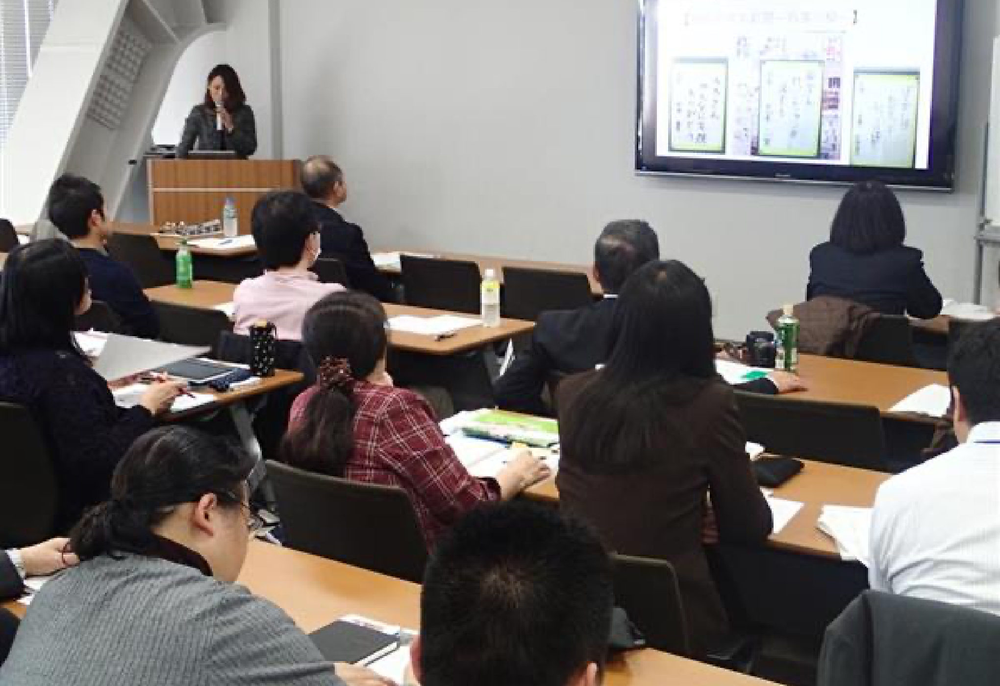

NIE教育の課題
新聞を購読するまでのハードルが高く、NIEが行えていない。継続的に実施するための予算が不足しており、本腰を入れて取り組めていない。新聞学習の大切さは理解しているが、準備に時間がかかるため行えていない。
産経新聞への要望
情報を整理して読み解く力を育てる教材を作って欲しい。国際的な感覚を子どもたちに持ってほしいので、国際面を充実させて欲しい。パソコンやタブレットでの使用を想定したワークシートなどがあえれば便利だと思う。